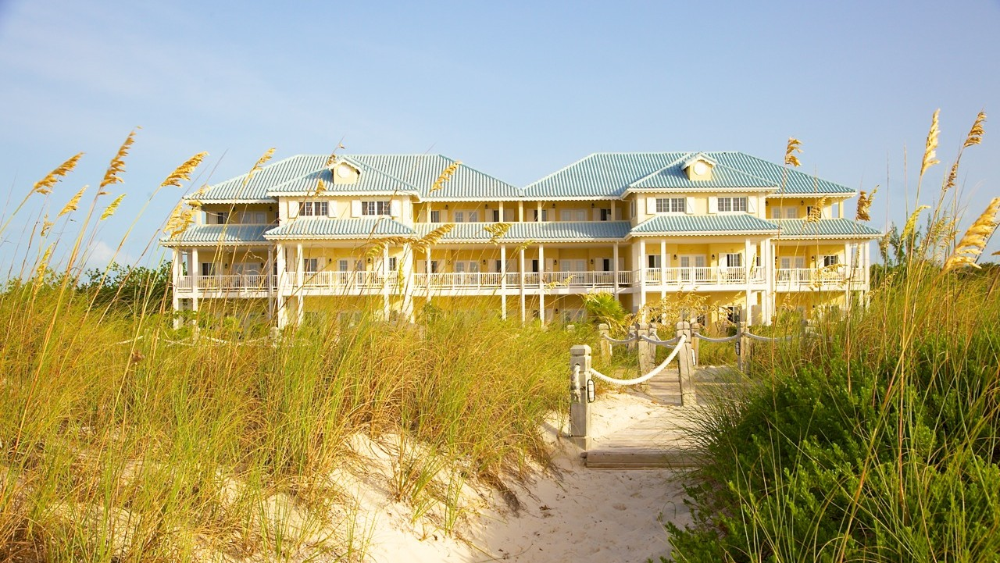
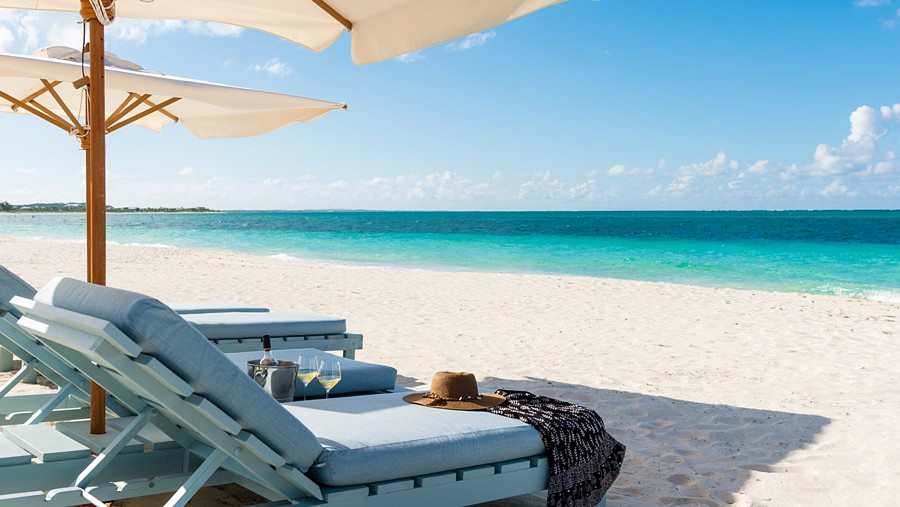
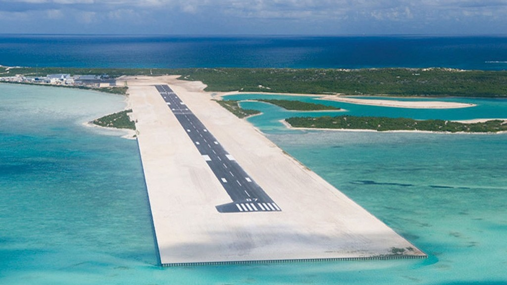

All you need is love sunscreen, your most beautiful bikini and to be ready for the open bar.
July 30th 2015


Bonne nouvelle, vous n'avez rien (ou presque) à faire, puisque nous allons tous rester ensemble, dans l'hôtel même où aura lieu la cérémonie. Les petit-dejeuners sont inclus, pas de all-inclusive (navré), mais quelques petits restos sympa dans le coin pour pas cher, et au pire chaque suite a sa cuisine pour ceux qui ont l'âme de chefs cuistos.
Un tarif de groupe nous a été octroyé pour approcher environ 25€ par personne par nuit, avec vue sur les Caraïbes #peinard.
Concrètement, les offres se découpent comme ceci :
Contactez-nous en précisant le type de chambre que vous souhaitez, et nous nous occuperons des démarches avec l'hôtel pour que votre chambre soit réservée.

Là ça se corse, mais pas de panique. Pour le moment, les vols les moins chers que nous avons trouvé oscillent entre 850 et 1000€, au départ de Paris, arrivée à Providenciales (pile l'île sur laquelle on se retrouve). Tout dépend des escales (Miami ? Toronto ?) et des jours d'arrivée et départ. Evidemment, au plus vite on booke les billets, moins on risque que le prix n'augmente. Vous comprenez pourquoi on aimerait avoir vos retours assez vite !
Nous essayons encore de négocier avec des compagnies aériennes pour avoir un tarif de groupe, nous sommes sur le coup. Dans tous les cas, pour ceux qui auraient peur de prendre l'avion tout seul, nous pouvons booker les billets ensemble, pour être sûrs de ne pas avoir de problèmes pendant les correspondances et d'arriver tous sains et saufs, frais et dispos (enfin, ça on est pas si sur), prêts à mettre son maillot de bain et parader sur la plage.